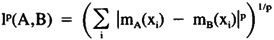

by Abraham Kandel
CRC Press, CRC Press LLC
ISBN: 084934297x Pub Date: 11/01/91
|
|
Fuzzy Expert Systems
by Abraham Kandel CRC Press, CRC Press LLC ISBN: 084934297x Pub Date: 11/01/91 |
| Previous | Table of Contents | Next |
Bart Kosko
Association generalizes conditioning. When B is conditioned on A, B is associated with A. The association pair (A,B) then recalls B when presented with A:
A → (A,B) → B
Associative memories map data to data. Random access memories (RAMs) map addresses to data. Content addressable memories (CAMs) map data to addresses. Parallel distributed associative memories superimpose associated data on the same memory medium. RAMs are not parallel distributed; they are serial and local. Neural-network CAMs are parallel distributed.46 Autoassociative32,33 associative memories store patterns from the same vector space. A piece of a stored pattern recalls the entire pattern. More generally, heteroassociative memories store pairs of unrelated data: (A1,B1, . . . , (Am,Bm), where Ai is an n-vector and Bi is a p-vector. The stored pair (Ai,Bi) behaves as a logical biconditional, or metarule: If Ai, Then Bi; If Bi, Then Ai.
Association strength is a matter of degree, just as conditioning is a matter of degree. Fuzzy association is storing and recalling uncertain associations. The associations can be uncertain, or the associated patterns A and B can be uncertain, or both. The storage media are fuzzy associative memories (FAMs). Following we discuss several easy-to-construct FAMs, how they behave, and how the associative recall process in neural networks/associative memories often amounts to minimizing a fuzzy entropy.
Modus ponens is a paradigm of associative memory. In propositional logic, modus ponens is the theorem that if A is true and the conditional A → B is true, then B is true. The pair (A,B) is stored by the conditional A → B, which serves as a type of memory. When an input or search key C is presented to the memory, B is recalled if, and only if, C = A. When the fuzzy truth values t(A), t(B), t(A → B) ∈ [0,1], the conditional is a skeletal FAM. When the stored pair (A, B) is presented with the approximate datum A′ ≅ A, then B′ ≅ B is recalled. For example, if p = t(A → B) = min(1, 1 - t(A) + t(B)) < 1, then t(B) = p + t(A) - 1. Hence t(B′) ≅ t(B) if t(A′) ≅ t(A).
How are the associations (Ai,Bi) obtained? In expert-systems theory the corresponding conditionals are obtained by the knowledge engineering process by asking for them. In FAM theory, the pattern associations are obtained by the association engineering process by asking for them, by abstracting situation-response prototypes from historical data, or by autonomously growing them in adaptive learning networks.
We present a geometric interpretation of sets and fuzzy sets as points on or in unit hypercubes. A set A is a binary n-vector — a bit vector. A = (1 0 1 1) is a set, or message. A set A is a point in the Boolean n-cube Bn = {0,1}n, the set of all subsets of the space X = {x1, . . . , xn}. X has 2n subsets. A is equivalent to one of the 2n-many mappings mA: X → {0,1}; mA(xi) is the degree of membership of the ith element xi in A. The numeral 0 indicates no membership; 1 indicates total membership. The space X is the unit vector (1, . . . , 1). The empty set ø is the null vector (0, . . . , 0). The power set of X, denoted 2X, is the set of all subsets of X: 2X = {A ∈ Bn: A ⊂ X}. Hence, 2X = Bn. In general, the power set of B, 2B, is the set B subsets. A is a subset of B if mA(xi) ≤ mB(xi) for all i; equivalently, if xi ∈ A implies xi ∈ B. Hence 2B ⊂ 2X, a subcollection of Bn. The intersection A ∩ B = {x: x ∈ A and x ∈ B}, the set of elements common to A and B; equivalently, mA ∩ B = min(mA,mB). Dually, the union A ∪ B is the set of elements in either A and B, or mA ∪ B = max(mA,mB). The complement Ac = X/A = {x: x ∉ A}, all elements of X not in A; equivalently, mAc = 1 - mA. The cardinality or size of A is the number of elements in A. If A = (1 0 1 1), the cardinality of A is 3. If A is not finite — if A can be put into a one-to-one mapping with a proper subset of itself — then its cardinality is ∞. The lp distance between sets A and B is the pth root of the sum of the pth absolute differences:

l1(A,B) = H(A,B) is Hamming distance, the number of vector slots in which the binary patterns A and B differ. If A = (1 0 1 1), then H(A, X) = 1.
| Previous | Table of Contents | Next |